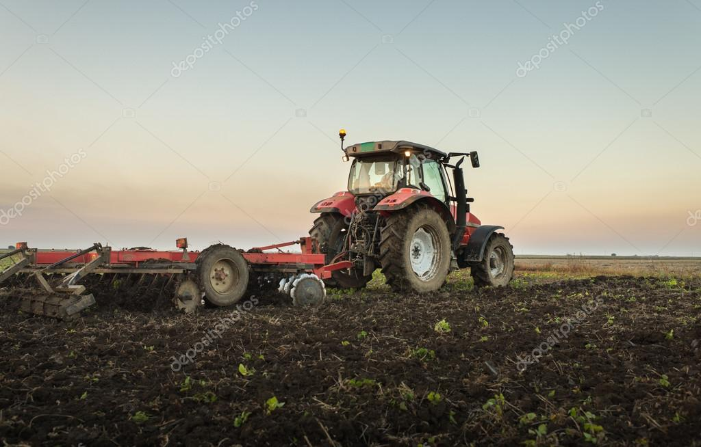

O Campo
O campo é um lugar de tradição, onde a natureza e a simplicidade se encontram. Aqui celebramos as colheitas, as festas de São João e a vida rural.
A Cidade
A cidade é um centro pulsante de cultura e inovação. Aqui encontramos diversidade, arte e as melhores oportunidades para todos.
Conectando os Dois Mundos
A conexão entre o campo e a cidade é enriquecedora. As feiras de produtos locais trazem o sabor do campo para os cidadãos, enquanto as inovações urbanas ajudam a melhorar a vida no campo.
